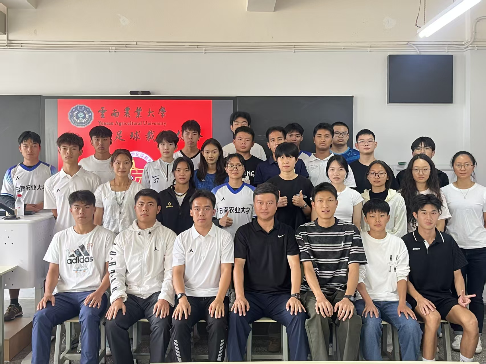
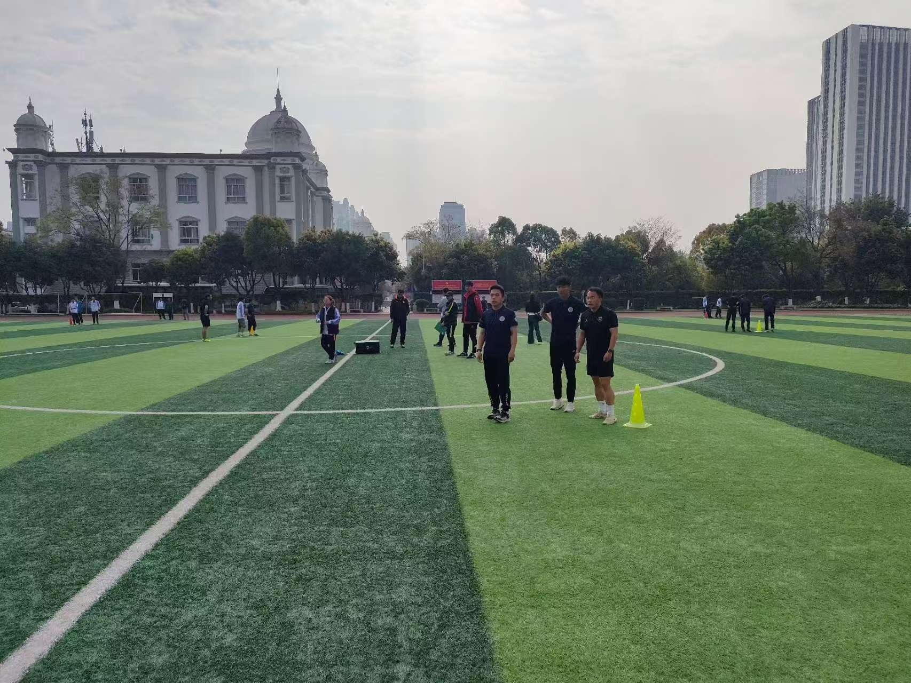
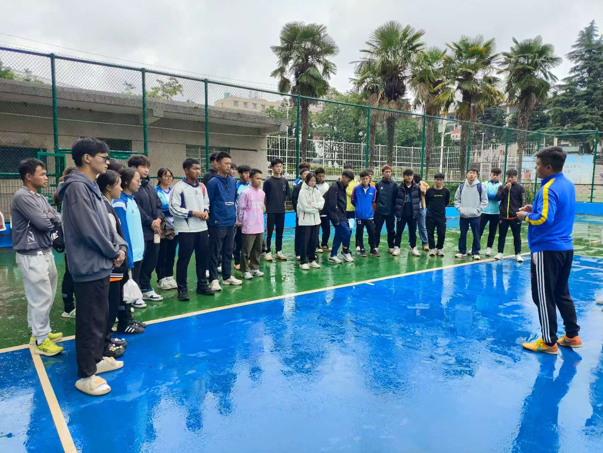
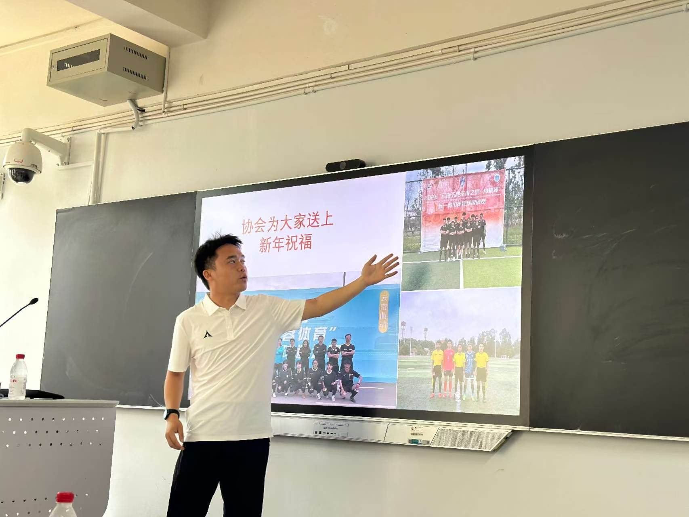
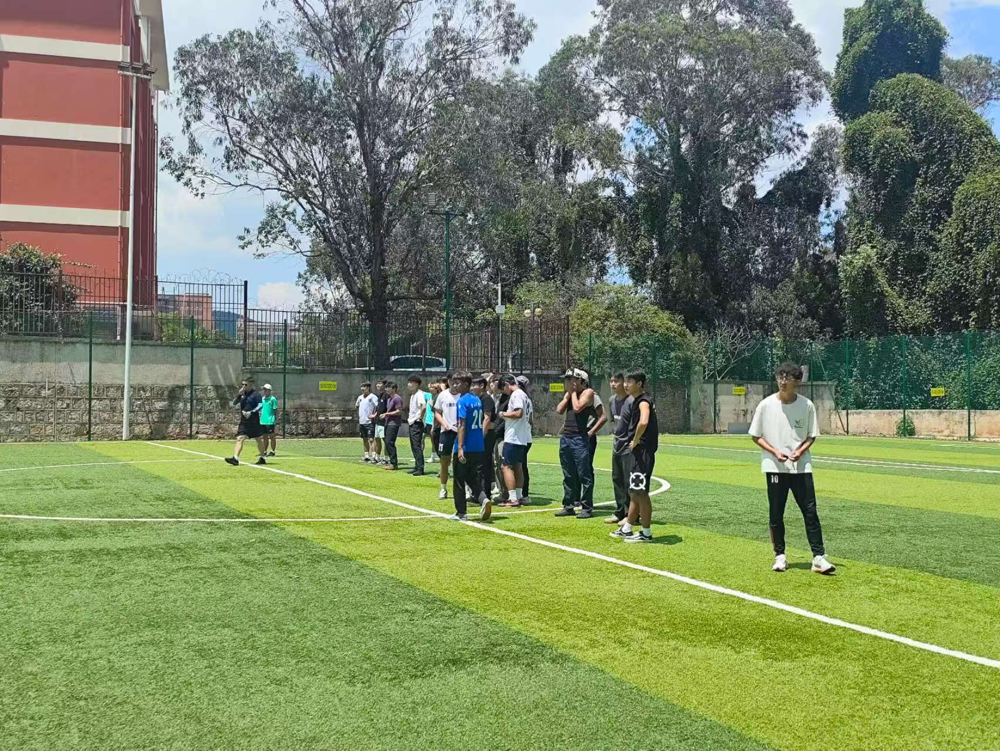
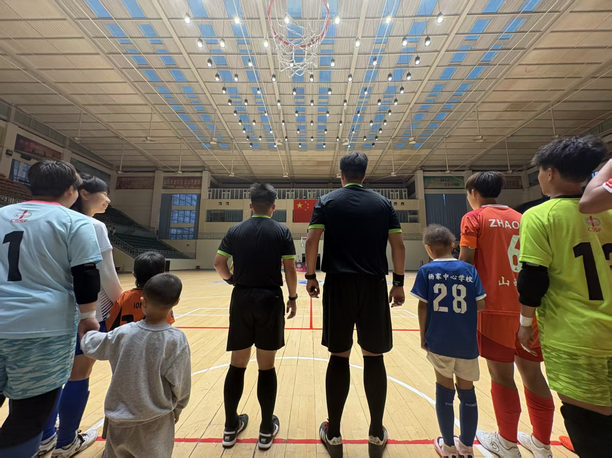
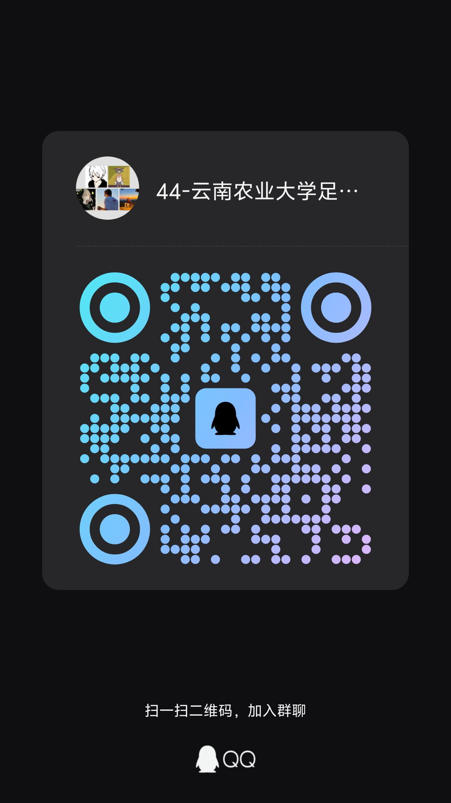

培训部
开展规则实训，加强执裁能力。
规则实训
我们是谁
足球裁判协会以普及足球竞赛规则、培养专业学生裁判员、保障校内各类足球赛事公平有序开展为宗旨。协会面向全校热爱足球运动的在校生招新，现有正式会员百余人，定期吸纳体育专业及足球爱好者加入。
协会常态化开展足球裁判理论授课、手势实操训练、场上跑位演练等基础培训，组织成员参与校内新生杯、院系杯赛、校园农超足球赛等赛事执裁工作。依托专业体育教师指导，协会定期组织规则考核、模拟判罚演练，并选派优秀学员参加足球裁判员等级培训。
经过多年发展，协会形成“理论学习+实战执裁+等级考证”三位一体的培养特色，为校园足球赛事输送稳定可靠的学生裁判力量。协会将持续深耕裁判技能培养，加强对外交流学习，完善梯队人才建设，助力校园足球运动规范化长效发展。
组织架构
开展规则实训，加强执裁能力。
规则实训策划协会活动，宣传并打造协会对外形象。
宣传策划负责赛事协会成员组织安排，精细化管理各项财务。
组织财务活动剪影
从规则讲解到省级培训，从以老带新到赛区执裁。
每一帧都是足球裁判协会的生动注脚。
品牌项目

01开展动态间歇恢复体能测试，参与对象为云南省校园足球联赛裁判员。本协会 12 人参加培训体能测试，均顺利通过。
体能测试 · 全员通过 · 省级联赛
02指导老师对参与农大杯执裁的协会成员进行赛前指导、重点强调与培训。成员风雨无阻按时参加培训，执裁积极性高。
赛前指导 · 风雨无阻 · 执裁备战
03开展协会换届工作，面向在校协会全体成员。活动氛围融洽，成员积极配合。
换届交接 · 全员参与 · 氛围融洽
04开展五人制足球裁判实操培训，参与对象为出赛区协会部分成员。培训过程认真有序，成员进步明显。
五人制 · 实操培训 · 赛区进阶
05协会骨干成员开展五人制比赛执裁，执裁表现获得队员认可。
骨干执裁 · 实战检验 · 获得认可